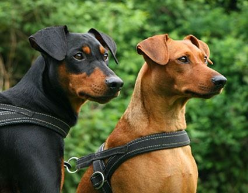

Мини пинчер
Мини пинчер е дребнa късокосместа порода кучета - кроманьони, които са много смели за размера си, любопитни и енергични. На височина достигат 25 - 30 см, а на тегло от 3 до 5 килограма. Продължителността на живота им е 13-14 години. Произлизат от териерите. При добри условия на отглеждане, козината е къса, гъста, блестяща, плътно прилепнала към тялото. Цветът на космената покривка е черен или кафяв с червеникавожълти петна, кафявочервеникав с по-светли петна, сивосинкав и др. Главата е относно удължена клинообразна тон с окраската. Очите са тъмни. Отличават се с остър слух. Много се привързват към господаря си. Раждат от 1 до 6 малки. То е много игриво куче и може да доживее дълбока старост.
